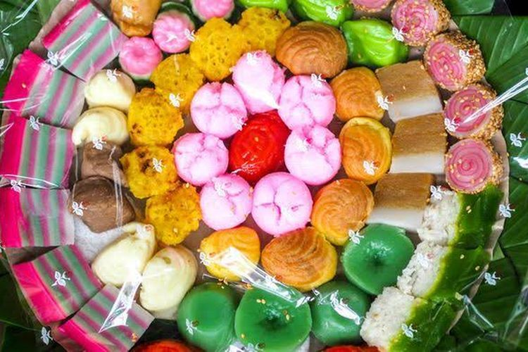
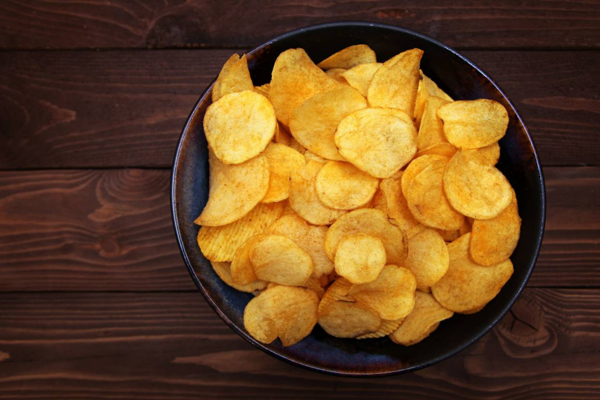
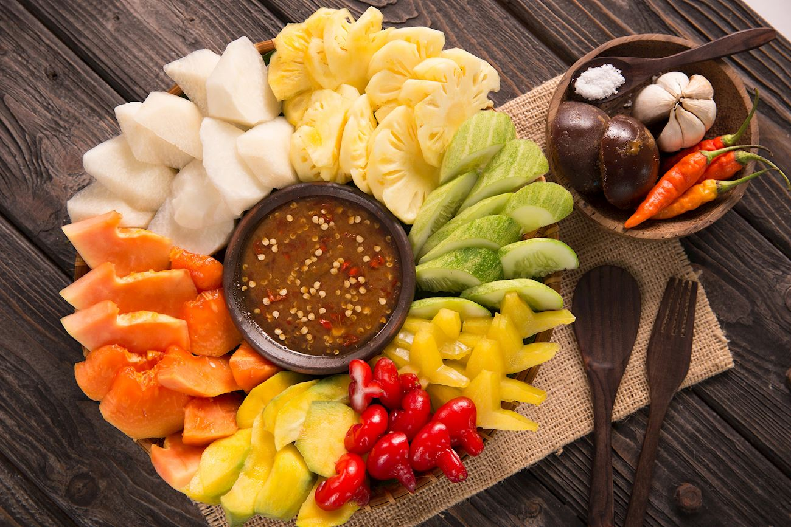

Penjelasan Produk Makanan Halal
1. Roti

Roti halal dibuat tanpa menggunakan bahan pengembang berbasis alkohol atau emulsifier haram. Semua bahan seperti tepung, ragi, mentega, dan gula harus bersertifikat halal untuk memastikan tidak ada unsur najis atau syubhat.
2. Kue
Kue halal tidak mengandung gelatin dari hewan yang tidak disembelih secara syar’i, tidak memakai pewarna dari serangga, dan bahan seperti keju atau susu fermentasi yang dipakai wajib dari sumber halal dan bersih.
3. Keripik
Keripik halal harus digoreng dengan minyak nabati baru, bukan minyak bekas dari bahan haram. Bumbu perisa (seperti balado, keju, BBQ) wajib diperiksa karena sering mengandung ekstrak yang bisa berasal dari hewan.
4. Rujak
Rujak halal berarti semua buah dicuci bersih dan bumbu kacangnya tidak memakai bahan campuran seperti terasi atau cuka yang tidak halal. Proses pengolahan pun harus bebas dari kontaminasi bahan non-halal.
5. Gorengan
Gorengan halal harus digoreng dengan minyak halal, tidak tercampur sisa bahan haram (misalnya daging tidak halal). Isiannya seperti tahu, tempe, atau risol juga harus dipastikan tidak mengandung daging atau keju non-halal.